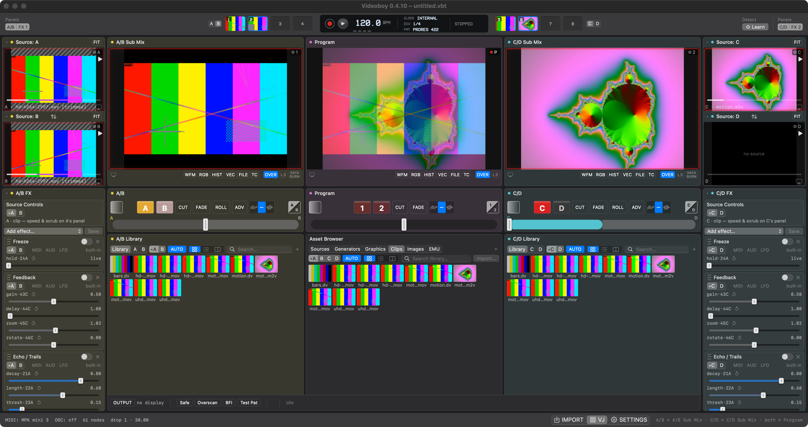
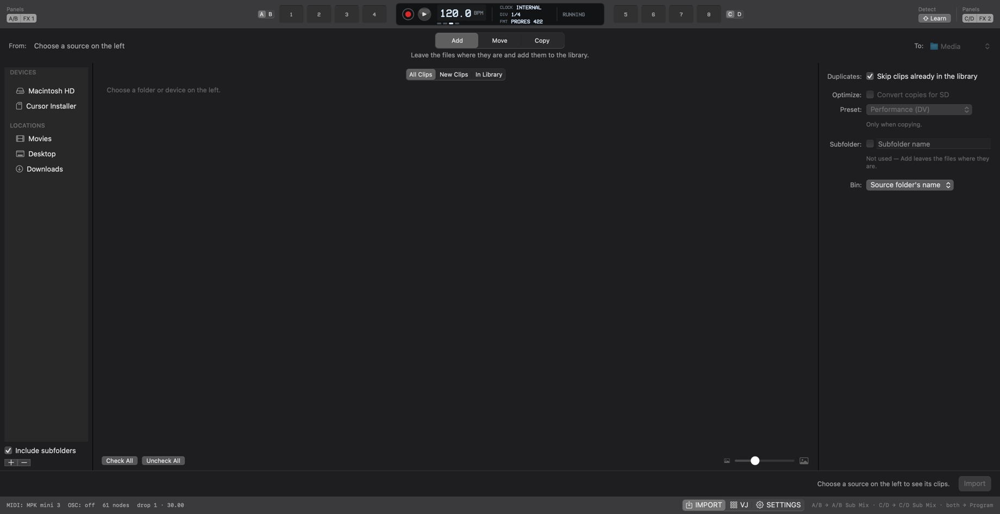
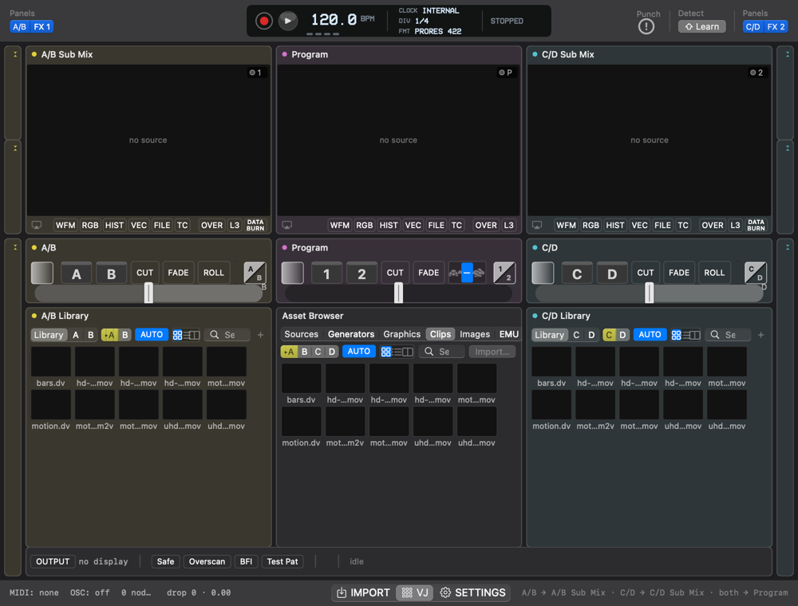
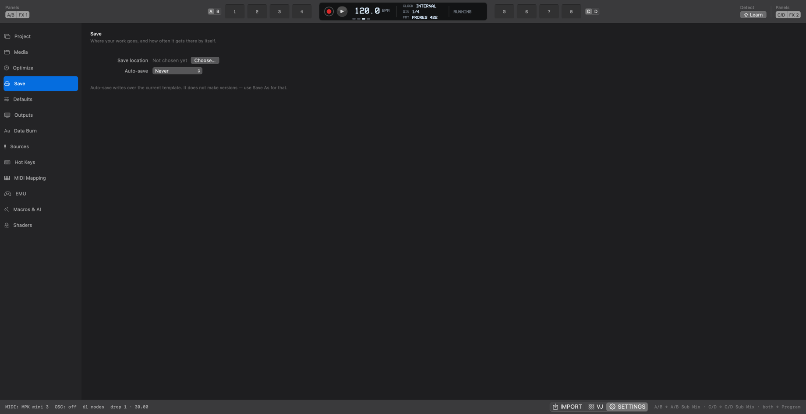

A checked inventory of what Videoboy does; how it compares with Resolume, VDMX, Millumin, QLab, MadMapper, TouchDesigner, Synesthesia, the DJ video tools, vMix, ATEM, DaVinci Resolve, Premiere Pro and Logic Pro; what broadcast and DJing can teach it; the owner's roadmap; and what I would do next.
| 03 | Executive summary | five findings and the numbers |
| 04 | 01 · Videoboy | what it is, the window, the modes |
| 07 | 02 · Feature inventory | 130 features checked in the code, and the honest list |
| 13 | 03 · Market | lanes, who's who, prices, business models, 2026 signals |
| 18 | 04 · Feature comparison | live tools, adjacent tools, scoreboard |
| 22 | 05 · Inspectors and gaps | what their inspectors show; major and minor gaps |
| 25 | 06 · Interface | vs Logic Pro, DaVinci Resolve, Premiere Pro, VDMX |
| 28 | 07 · Broadcast and DJ deep dive | two worlds, twelve borrowings |
| 30 | 08 · Vocabulary | Videoboy vs DJ vs broadcast news; false friends |
| 32 | 09 · Roadmap — the owner's | from the build plan and proposals |
| 33 | 10 · What I would do | generalist · market and money · live video artist · 90 days |
| 37 | Appendix | method, verification, sources |
Videoboy claims are checked against the code. 130 features were read from the source, not from the documents (two of which are out of date), each with an evidence path. Every path was tested for existence by script and the status counts are machine counts. A second read corrected three rows and added three.
Market claims are sourced. Vendor documentation and price pages were fetched on 2026-10-01. Figures from secondary sites are marked *. Anything not checked is shown as ?, not guessed.
Prices are in the vendor's currency (€, $, £) and are not converted. Subscriptions are annualised as monthly × 12 where no yearly price is published.
Opinion is labelled. The market map's positions, the interface ratings and the "what I would do" section are the author's view; the roadmap is the owner's.
Scope. DMX and lighting are left out, as asked. No competitor was installed or tested hands-on; no market-size figure is given because none could be sourced reliably.
85 shipped · 10 partial · 2 off · 33 absent
7 live tools + 7 adjacent (DJ, switchers, editors, DAW)
lines in 252 files; Core has 867 tests, 0 failures
offscreen PNG, analog loopback, virtual MIDI
of a 33.4 ms budget (29.97 fps)
dropped frames; memory flat; 0 leaks
Musical, playable manipulation of compressed video bitstreams (MPEG family), output clean to SD for an analog chain. Everything else is supporting cast (CLAUDE.md).
SD NTSC 720×480 at 29.97 is the default and the reference. PAL, HD, square and vertical are approved for 0.4.11, not built yet.
Smooth playback outranks every feature. The app is silent: audio comes in only to find the beat. A/B always feed ONE and C/D always feed TWO.
Native AppKit + Metal, Apple Silicon only. About 80,000 lines of Swift in 252 files; a headless Core with 867 tests; 40 named self-QA checks.
one frame at 29.97
stress test, all four channels, every effect (09-28)
stress worst; GPU-fence stalls still under study
2× 1080p H.264 + ProRes + 4K HEVC, memory flat


Lightroom Classic's model: devices and locations, a checkable grid, Add · Move · Copy, duplicates skipped, choose a bin, optional Copy + Optimize into linked MPEG-2 GOP 6 media.

The performance window. It is width-reactive: at compact widths the sources and FX panels fold to rails; at narrow widths only Program, the faders and the output bar stay.

A mode, not a dialog: 13 panes, from Project, Media and Optimize to Hot Keys, MIDI Mapping, EMU, Macros & AI and Shaders.
Switching modes keeps the engine rendering; output and recording continue.
⌘1–⌘3 are View-menu items, so they can be remapped in System Settings.
Import's viewer has its own player; auditioning never touches Program.
Panels collapse and the grid reflows at three breakpoints; nothing ever moves position.
85 shipped · 10 partial · 2 built but switched off · 33 not built — 130 rows, every evidence path tested by script.
| # | Feature (checked in the code) | Status | Evidence |
|---|---|---|---|
| A · Platform and engine | |||
| A1 | Native macOS app, AppKit + Metal, Apple Silicon (arm64) only | ● | CLAUDE.md, App/Sources/Videoboy/Render/Engine.swift |
| A2 | Core logic as a headless, unit-tested SwiftPM package (867 tests, 0 failures on 2026-10-01) | ● | Core/Sources/VideoboyCore, scripts/test.sh |
| A3 | Render graph: 4 channels → 2 sub-mix buses → Program (A/B→ONE, C/D→TWO fixed) | ● | docs/SPEC.md §2, Core/Sources/VideoboyCore/Graph |
| A4 | Frame-clocked engine, renders once per 29.97 content frame from a screen display link | ● | App/Sources/Videoboy/Render/Engine.swift |
| A5 | Decode ahead on per-clip queues; tick never waits more than 5 ms (holds last picture) | ● | Core/Sources/VideoboyCore/Modules/Sources/ClipPrefetcher.swift |
| A6 | Measured full-load stress: mean 6.4 ms / worst 17.8 ms; 10-min HD soak 0 dropped frames | ● | docs/AUDIT-2026-09-28.md |
| A7 | Feature flags with env override (VIDEOBOY_FLAGS) | ● | Core/Sources/VideoboyCore/VideoboyCore.swift |
| A8 | Param-code addressing: every control has a stable code (e.g. 24A); mappings survive module swaps | ● | Core/Sources/VideoboyCore/Control/ParamCode.swift, Core/Sources/VideoboyCore/Control/ParamRegistry.swift |
| A9 | One extension seam (Node protocol + manifest), documented recipe | ● | docs/ADD-A-MODULE.md, Core/Sources/VideoboyCore/Modules/_Template/ExampleNode.swift |
| A10 | Project canvas: SD NTSC 720×480 @ 29.97 only today | ◐ | other canvases are planned for 0.4.11 (docs/PROPOSAL-2026-09-26.md §6) |
| A11 | Launch window listing what loads (Adobe/Logic style) | ● | App/Sources/Videoboy/UI/LaunchWindowController.swift |
| A12 | Self-QA harness: 40 named checks (offscreen PNG, DVC100 loopback, virtual MIDI) | ● | scripts/selfqa.sh, docs/SELF-QA-HARNESS.md |
| B · Sources (what can be loaded into A / B / C / D) | |||
| B1 | Ordinary video files via AVFoundation (.mov/.mp4, H.264, HEVC incl. hev1, ProRes) | ● | Core/Sources/VideoboyCore/Modules/Sources/AVFClipDecoder.swift, Core/Sources/VideoboyCore/Modules/Sources/HEV1Reader.swift |
| B2 | MPEG-family files through the bitstream decoder (libav, LGPL) so the wedge has packets to damage | ● | Core/Sources/VideoboyCore/Modules/Sources/MPEGStreamDecoder.swift |
| B3 | DV files | – | DV path removed 2026-09-28 (git log ad14e29, c5786d9) |
| B4 | Photo folder / image sequence as ONE beat-locked clip (SEQ, a frame per quarter note) | ● | Core/Sources/VideoboyCore/Modules/Sources/ImageSequenceDecoder.swift |
| B5 | 13 native generators (Solid, Linear/Radial Gradient, Checkerboard, Stripes, Grid, Rings, White Noise, Noise Field, Difference Clouds, Halftone, Scanlines, Now Playing) | ● | Core/Sources/VideoboyCore/Modules/Sources/GeneratorSourceNode.swift |
| B6 | ISF generators from the shared ISF folders (~/Library/Graphics/ISF, VDMX's) | ● | Core/Sources/VideoboyCore/Modules/Effects/ISF, App/Sources/Videoboy/UI/GeneratorThumbnails.swift |
| B7 | Test pattern source (SMPTE-style bars etc.) | ● | Core/Sources/VideoboyCore/Modules/Sources/TestPatternSourceNode.swift, App/Sources/Videoboy/Platform/BarsSelfQA.swift |
| B8 | Camera / capture card via AVFoundation (webcams, Continuity Camera, UVC) | ● | App/Sources/Videoboy/Platform/LiveAVFoundationCapture.swift |
| B9 | Window capture via ScreenCaptureKit (pick a window) | ● | App/Sources/Videoboy/Platform/WindowCaptureSource.swift |
| B10 | Configured sources list (Settings ▸ Sources, + / −) | ● | App/Sources/Videoboy/UI/SourceListView.swift |
| B11 | IP camera / NDI / RTSP / SRT input | – | listed greyed in Settings ▸ Sources; no decoder |
| B12 | DV deck (FireWire) input | – | greyed placeholder |
| # | Feature (checked in the code) | Status | Evidence |
|---|---|---|---|
| B13 | DVC100 as a live source (not just self-QA loopback) | – | docs/BUILD-PLAN.md backlog |
| B14 | Emulated titler: real Scala MM400 on Amiberry (Kickstart 3.1), out-of-process, genlock key | ◐ | Core/Sources/VideoboyCore/Modules/Emu/EmulatedTitlerNode.swift; key colour/threshold/edge have no fader |
| B15 | Native Core Text character generator | ◐ | Core/Sources/VideoboyCore/Modules/Titler/CharacterGeneratorNode.swift; node built, **not reachable from the UI** |
| B16 | Now Playing overlay (Apple Music + Spotify; three looks; fades on change) | ● | Core/Sources/VideoboyCore/Modules/Titler/NowPlayingRenderer.swift, App/Sources/Videoboy/Platform/NowPlayingWatcher.swift |
| B17 | SVG / PS1-style source | – | docs/SPEC.md §17, not started |
| B18 | Audio playback of clips | – | by design: the app outputs no audio (docs/SPEC.md §21) |
| C · Per-channel playback (the shuttle) | |||
| C1 | Play / stop per source, preview per source | ● | App/Sources/Videoboy/UI/PanelBodies.swift |
| C2 | Loop · Ping-Pong · One Shot | ● | Core/Sources/VideoboyCore/Modules/Sources/ClipSourceNode.swift |
| C3 | Scrub track and frame step | ● | App/Sources/Videoboy/UI/VBMiniPlayBar.swift |
| C4 | STEP playback locked to the beat (a frame per 8 bars … per 1/16), click faster / right-click slower | ● | Core/Sources/VideoboyCore/Modules/Sources/ClipSourceNode.swift (slowLadder, fastLadder), App/Sources/Videoboy/UI/VBStepButton.swift |
| C5 | Playback speed parameter | ● | Core/Sources/VideoboyCore/Modules/Sources/ClipSourceNode.swift (playbackSpeed) |
| C6 | In / out marks (stored in the catalog, trim playback) | ● | Core/Sources/VideoboyCore/Persistence/Catalog.swift |
| C7 | Fit · Fill · Stretch · Centre per source (FIT key) | ● | Core/Sources/VideoboyCore/Modules/Sources/PreviewFill.swift |
| C8 | Queue per channel (Play Next to the front, Play Last to the end; saved with the show) | ● | Core/Sources/VideoboyCore/Modules/Sources/ClipQueue.swift, App/Sources/Videoboy/UI/QueueView.swift |
| C9 | A/B ROLL (roll the taken source, re-cue the leaving one) + ADV (load the next clip) | ● | Core/Sources/VideoboyCore/Control/ABRoll.swift, docs/specs/ab-roll-adv.md |
| C10 | Hot cues / cue points inside a clip (DJ-style) | – | no cue-point model; only one in/out pair per clip |
| C11 | Reverse play as a key, time-remapping curves | – | reverse only via Ping-Pong |
| C12 | Beat-quantised loop lengths inside a clip (loop roll, beat jump) | – | — |
| D · Library, catalog and import | |||
| D1 | SQLite catalog (Lightroom model), WAL, single writer queue, weekly backup | ● | Core/Sources/VideoboyCore/Persistence/Catalog.swift |
| D2 | Bookmarks so moved/renamed files can be found (relink in the model) | ◐ | Core/Sources/VideoboyCore/Persistence/Catalog.swift; no Relink… command found in the UI |
| D3 | Nested bins; imports keep the folder tree | ● | App/Sources/Videoboy/Platform/BinsSelfQA.swift |
| D4 | Icon / list / column views (Finder model), path bar, multi-select, drag anywhere, ⌘C/⌘V/⌘⌫ | ● | App/Sources/Videoboy/UI/LibraryGridView.swift, App/Sources/Videoboy/UI/LibraryListView.swift, App/Sources/Videoboy/UI/LibraryColumnView.swift |
| D5 | Hover-scrub thumbnails with real decoded frames | ● | App/Sources/Videoboy/UI/LibraryItemView.swift |
| D6 | Search | ● | App/Sources/Videoboy/UI/LibraryBrowser.swift |
| D7 | Background import job + contextual status bar (1,000 clips mid-show, 0 dropped) | ● | App/Sources/Videoboy/UI/ImportJob.swift, App/Sources/Videoboy/Platform/ImportSelfQA.swift |
| D8 | Import mode (⌘1): Devices / Locations, Add · Move · Copy, duplicates skipped, bin choice, J/K/L viewer, I/O marks | ● | App/Sources/Videoboy/UI/ImportModeView.swift |
| D9 | Copy + Optimize: linked optimized media (MPEG-2 GOP 6 on SD), playback prefers it | ● | App/Sources/Videoboy/UI/OptimizeQueue.swift, docs/specs/0.4.10-copy-optimize.md |
| D10 | Per-panel libraries (A/B and C/D) + central Asset Browser (Sources · Generators · Graphics · Clips · Images · EMU) | ● | App/Sources/Videoboy/UI/LibraryPanelBody.swift |
| D11 | Tags, smart bins, colour labels in use, energy fader | – | planned 0.5.0 (docs/PROPOSAL-2026-09-26.md appendix A) |
| D12 | Saved Playlists and Setlists, Lists tab | – | planned (docs/PROPOSAL-2026-09-28-setlist.md) |
| D13 | Catalog export to JSON | – | proposed, not found in code |
| # | Feature (checked in the code) | Status | Evidence |
|---|---|---|---|
| E · Mixing, cutting and transitions | |||
| E1 | Three crossfaders: A↔B, C↔D, ONE↔TWO (custom DJ-style VBFader) | ● | App/Sources/Videoboy/UI/VBFader.swift, Core/Sources/VideoboyCore/Modules/Mix/CrossfadeNode.swift |
| E2 | CUT and FADE keys, beat-quantised, with their own rates | ● | Core/Sources/VideoboyCore/Modules/Mix/FadeAutomation.swift |
| E3 | Bus keys (A / B, C / D, 1 / 2) take a source to air | ● | App/Sources/Videoboy/UI/VBBusButton.swift |
| E4 | 13 blend modes (Normal … Soft Light) + Key | ● | Core/Sources/VideoboyCore/Modules/Mix/BlendMode.swift |
| E5 | 13 transition patterns: Dissolve, Wipe H/V, Slide H/V, Push H/V, Iris, Split H/V, Interlace H/V, AVE-5 | ● | Core/Sources/VideoboyCore/Modules/Mix/Transition.swift |
| E6 | Panasonic WJ-AVE5 wipe block (31 patterns, MULTI, border/soft edge, back colour, joystick) | ● | Core/Sources/VideoboyCore/Modules/Mix/AVE5Wipe.swift, App/Sources/Videoboy/UI/AVE5WipePanel.swift |
| E7 | Clip Pads: 8 launchers (1–4 A/B, 5–8 C/D), pre-opened, ⌥ load+play+cut, ⌥⌘ on the beat | ● | Core/Sources/VideoboyCore/Control/ClipPadBank.swift, App/Sources/Videoboy/UI/ClipPadView.swift |
| E8 | Hot Punch (!): pad press goes straight to Program | ● | docs/specs/clip-pads.md, App/Sources/Videoboy/Platform/PadsSelfQA.swift |
| E9 | Preview/Program (PVW/PGM) on separate buses with a take | ◐ | sub-mix monitors act as preview; there is no dedicated PVW bus or AUTO/TAKE pair |
| E10 | Soft-edge / border width on ordinary wipes | – | docs/BUILD-PLAN.md ("Not yet") |
| E11 | Layer mask, picture-in-picture box, split screen as a layer | – | Layer Mask in backlog; AVE-5 P-IN-P drawn disabled |
| E12 | Upstream/downstream keyers as separate layers (DSK) | – | only the Key blend mode on a fader |
| E13 | Per-source crop, anchor point and a visible opacity fader | – | layer opacity 66A exists with no fader (Core/Sources/VideoboyCore/Control/ParamCode.swift); Transform has no crop |
| F · Effects | |||
| F1 | Datamosh · H.264 (live I-frame removal, P-frame bloom, MOSH hold, HEAL with shapes, heal on the beat) | ● | Core/Sources/VideoboyCore/Modules/Effects/DatamoshNode.swift, docs/DATAMOSH.md |
| F2 | Composite · NTSC (encode→decode, dot crawl, chroma bleed, TBC wobble, head switching, generation loss, S-Video path) | ● | Core/Sources/VideoboyCore/Modules/Effects/CompositeCodecNode.swift |
| F3 | Feedback (frame delay, gain, zoom, rotate, luma key) | ● | Core/Sources/VideoboyCore/Modules/Effects/FeedbackNode.swift |
| F4 | Freeze (hold) | ● | Core/Sources/VideoboyCore/Modules/Effects/FreezeNode.swift |
| F5 | Echo / Trails | ● | App/Resources/ISF/Builtin/Echo.fs |
| F6 | Transform: scale, position X/Y, rotation, flip H/V (no crop, anchor or 3-D rotation) | ● | App/Resources/ISF/Builtin/Transform.fs |
| F7 | Colour: brightness, contrast, saturation, shadow, highlight, black, white, gamma | ● | App/Resources/ISF/Builtin/Colour.fs |
| F8 | ISF import: any ISF effect/generator dropped in becomes a card (shared + app folders) | ● | Core/Sources/VideoboyCore/Modules/Effects/ISF, App/Sources/Videoboy/UI/ISFModuleListView.swift |
| F9 | Effect chain per FX panel, reorderable cards (Photoshop-layer order), one A · B · MIX focus | ● | App/Sources/Videoboy/UI/EffectChainPanelBody.swift, App/Sources/Videoboy/Platform/FXFocusSelfQA.swift |
| F10 | MPEG bitstream corruptor (the wedge's damage card) | ⚑ | built and tested; bitstreamCorruptor flag OFF by owner decision |
| F11 | NTSC output emulation toggle on the output bar | ⚑ | outputSignalEmulation flag OFF |
| F12 | FFGL plug-ins, Core Image / AU passthrough | – | docs/SPEC.md §8–9, not started |
| F13 | Macroblock-level motion-vector editing on MPEG-2 | – | deferred (docs/BUILD-PLAN.md) |
| F14 | Per-effect presets / effect snapshots | ◐ | whole-show save works; single-chain preset keys still open |
| G · Modulation, automation and the clock | |||
| G1 | Transport: BPM, play/stop, phase, subdivisions (1/1 … 1/16, dotted, triplet) | ● | Core/Sources/VideoboyCore/Clock/Transport.swift |
| G2 | Latency compensation (schedule at T − latency), unit-tested | ● | Core/Sources/VideoboyCore/Clock |
| G3 | Tap tempo | ● | App/Sources/Videoboy/UI/VBTempoField.swift |
| G4 | Beat detection with BeatNet (ported network) from system audio, an audio input, or ONE app's audio (Core Audio process taps) | ● | Core/Sources/VideoboyCore/Audio/BeatNet, App/Sources/Videoboy/Platform/SystemAudioTap.swift, docs/BEATNET.md |
| G5 | LFO on any effect parameter: 7 shapes, subdivision or free Hz, depth, phase, polarity, invert | ● | Core/Sources/VideoboyCore/Clock/LFO.swift |
| # | Feature (checked in the code) | Status | Evidence |
|---|---|---|---|
| G6 | Audio-reactivity bus (RMS, bands, onsets) → any effect parameter | ● | Core/Sources/VideoboyCore/Audio/AudioReactivityBus.swift |
| G7 | ⌥⌘ beat sweeps on faders and parameters (automation sampled at presentation time) | ● | Core/Sources/VideoboyCore/Control/ParameterSweep.swift, App/Sources/Videoboy/Platform/PushFadeSelfQA.swift |
| G8 | Driven-parameter marks (outline breathes on the beat) | ● | docs/DESIGN-BACKLOG.md "Done in this pass" |
| G9 | Manual BPM entry, ×2 / ÷2, downbeat ("one") finding, nudge/offset | ◐ | tempo field present; ×2/÷2 and bar-finding not built (docs/BUILD-PLAN.md) |
| G10 | MIDI clock in/out, Ableton Link | – | removed from CLOCK as unbuilt (App/Sources/Videoboy/Render/Engine.swift comment) |
| G11 | Timeline / cue-list automation (record a performance, play it back) | – | — |
| G12 | Calibrated feedback latency (measured 3 frames / 100 ms) | ◐ | Core/Sources/VideoboyCore/Modules/Effects/FeedbackLatencyCalibrator.swift; measured, not applied |
| G13 | Timecode sync (SMPTE LTC / MTC) | – | no implementation; TC is shown and burned in, not followed |
| G14 | Sync to DJ hardware (Pro DJ Link / StageLinQ) | – | song linking to Apple Music is planned instead (docs/PROPOSAL-2026-09-28-setlist.md §6) |
| H · Control | |||
| H1 | Core MIDI in: Note, CC, pitch bend; any velocity counts as a press | ● | Core/Sources/VideoboyCore/Control/MIDIInput.swift |
| H2 | Shift-to-detect MIDI learn on every enabled control; Esc cancels, ⌫ unmaps | ● | App/Sources/Videoboy/UI/DetectSession.swift, App/Sources/Videoboy/Platform/UndoSelfQA.swift |
| H3 | MIDI mapping pane (remove one at a time) | ● | App/Sources/Videoboy/UI/PreferencePanes.swift |
| H4 | Every beat-rate key follows one rule (click faster, right-click slower) — 93 keys | ● | App/Sources/Videoboy/UI/VBStepButton.swift |
| H5 | Hot keys pane; number keys fire pads | ● | App/Sources/Videoboy/UI/PreferencePanes.swift |
| H6 | 14-bit CC, NRPN, MIDI out (LED feedback to controllers), controller templates/fingerprinting | – | docs/STATUS.md §7 |
| H7 | OSC in/out | – | status bar reads "OSC: off"; no implementation |
| H8 | Undo / redo (general) | – | no NSUndoManager; targeted take-backs only (App/Sources/Videoboy/Platform/UndoSelfQA.swift) |
| H9 | Macros & AI control | – | Settings pane reads "Not built yet" (App/Sources/Videoboy/UI/PreferencePanes.swift) |
| I · Output, monitoring and scopes | |||
| I1 | Borderless output window on any display, mode negotiated and logged | ● | docs/SPEC.md §3, App/Sources/Videoboy/Platform/OutputSelfQA.swift |
| I2 | Send glyph under every preview: route Program / ONE / TWO / any source to a display; four-up tiled send | ● | App/Sources/Videoboy/UI/RoutingPopover.swift |
| I3 | Previews for all 4 sources, both sub-mixes and Program | ● | docs/mockups/layout-v6.html, selfqa/out/perf/pads/window.png |
| I4 | Scopes: waveform, RGB parade, histogram, vectorscope, mini luma; OVER (overlay) and L3 | ● | Core/Sources/VideoboyCore/Scopes |
| I5 | NTSC legality (7.5–100 IRE) reporting | ● | docs/DESIGN-BACKLOG.md |
| I6 | FILE / TC overlays and DATA BURN (burned-in timecode/file data) | ● | selfqa/out/phase-2/ui-layout/data-burn-program.png |
| I7 | Safe zones, overscan (on/off), BFI, test pattern to output | ● | App/Sources/Videoboy/UI/SettingsBarPanelBody.swift |
| I8 | Multiviewer with tally colours | ◐ | the grid is a multiviewer; red outline on the on-air monitors; no tally out |
| I9 | Projection mapping, edge blending, multi-projector warp | – | out of scope by design |
| I10 | Syphon / NDI / virtual camera out | – | optional backlog item |
| I11 | Overscan as a continuous control | – | docs/BUILD-PLAN.md |
| J · Recording and streaming | |||
| J1 | Record Program and discrete A/B/C/D together, one folder per take | ● | App/Sources/Videoboy/Platform/RecordingSession.swift |
| J2 | Codecs: ProRes 422, ProRes HQ, ProRes 4444, H.264, HEVC | ● | App/Sources/Videoboy/Platform/FrameRecorder.swift |
| J3 | Stream to OBS: MPEG-TS over UDP, nothing to install | ● | Core/Sources/VideoboyCore/Bitstream/MPEGTSStreamer.swift |
| # | Feature (checked in the code) | Status | Evidence |
|---|---|---|---|
| J4 | RTMP / SRT / NDI streaming | – | — |
| J5 | Recording audio with the picture | – | the app outputs no audio |
| J6 | Encoding off the main thread for recording/streaming | ◐ | audit F7/F8 open (docs/FEATURE-LEDGER-2026-09-27.md) |
| K · Shows, settings and modes | |||
| K1 | Show files (.vbt, plain-text JSON, template v5): New / Open / Open Recent / Save / Save As, auto-save, save-on-quit | ● | Core/Sources/VideoboyCore/Persistence/TemplateDocument.swift, App/Sources/Videoboy/Platform/TemplateSelfQA.swift |
| K2 | Mode bar: ⌘1 Import · ⌘2 VJ · ⌘3 Settings (switching never interrupts output) | ● | App/Sources/Videoboy/UI/AppMode.swift, App/Sources/Videoboy/UI/ModeController.swift |
| K3 | Settings mode, 13 panes: Project, Media, Optimize, Save, Defaults, Outputs, Data Burn, Sources, Hot Keys, MIDI Mapping, EMU, Macros & AI, Shaders | ● | App/Sources/Videoboy/UI/PreferencePanes.swift, selfqa/out/phase-2/ui-layout/preferences-*.png |
| K4 | Setup assistant (locations, project, optimize) | ● | App/Sources/Videoboy/UI/SetupAssistant.swift |
| K5 | Panels collapse to rails; width-reactive at three breakpoints; fixed docked grid | ● | App/Sources/Videoboy/UI/CollapsedRailView.swift, selfqa/out/phase-2/ui-layout/compact.png |
| K6 | "Don't remind me again" suppressions, resettable | ● | App/Sources/Videoboy/UI/ReminderAlert.swift |
| K7 | Simple mode (A/B only) | – | docs/STATUS.md §2 |
| K8 | LOCK per bank | – | planned (setlist proposal §7) |
33 features are absent, 10 are partial and 2 are finished but deliberately switched off — including the bitstream corruptor the app was built around.
Absent from the code: comments, greyed placeholders or nothing.
Built with a gap that matters on stage.
Off by the owner's decision, intact behind a flag.
— the corruptor's flag comment, Core/Sources/VideoboyCore/VideoboyCore.swift. Switched off because it "cannot currently be JUDGED on an analog chain".
clip grids, layers, effects, BPM
video tied to the track's beatgrid
PGM/PVW, keyers, ISO, streaming
cue lists, GO, timecode, fades
warping, blending, LED, scale
node graphs, 3-D, interactivity
timelines, markers, inspectors
the musical clock, Link, controllers
Live like a VJ tool, disciplined like a switcher, timed like a DJ, aimed at an SD analog chain. No product in any lane damages a real bitstream live or models an NTSC signal path — that is the moat, and the audience is narrower than any lane's.
Latest versions and list prices as published on 2026-10-01. * = secondary source; — = not published or not checked. The two right-hand columns summarise the comparison matrices.
| Product | Lane | Platform | Version (2026) | Price | Model | Does better than Videoboy | Videoboy does better |
|---|---|---|---|---|---|---|---|
| Videoboy | Analog/glitch live mixer | Mac (Apple Silicon) | 0.4.10 | — | private | — | — |
| Resolume Avenue / Arena 7 | VJ · LED · mapping | Mac · Win | 7.x | €299 / €799 | perpetual + renewals €79 / €219 | clip grid at scale, mapping, Link / SMPTE / DJ sync, OSC | bitstream looks, broadcast takes, beat detection, ISO |
| VDMX6 / Plus | VJ · video art | Mac | 6 (1.3.8) | $199 / $349 | perpetual | any data on any control, masks, vision FX, cue list | a fixed performance surface, ISO record, catalog |
| Millumin 5 | Theatre · installation | Mac | 5.14 (Jul) | €29/wk · €199/yr · from €399 | rental + perpetual | timelines, cues, warping, theatre control | beat clock, live looks, ISO record |
| QLab 5 | Theatre show control | Mac | 5 | free core · $599–1,399* | perpetual · rent-to-own | cue list + GO, timecode, show reliability | beat, mixing, looks |
| MadMapper 6 | Mapping · LED · laser | Mac · Win | 6.0.x | €39/mo · from €399 | rental + perpetual | mapping, LED, lasers, timelines | broadcast-style mixing, ISO record |
| TouchDesigner | Generative · interactive | Mac · Win | — | free NC · $300 · $600 · $2,200 | perpetual keys | anything you can build | ready to play in minutes |
| Synesthesia | Audio-reactive VJ | Mac · Win | — | $199 / $399 | perpetual (+$60/yr) | 100+ audio-reactive scenes | footage-first mixing, recording |
| Isadora 4 | Theatre · interactive | Mac · Win | 4 | not verified | — | scene-based interactivity, Python | beat, looks |
| Serato Video (DJ Suite) | DJ video | Mac · Win | — | $499 or $14.99/mo | perpetual or subscription | video glued to tracks, DJ hardware | independent picture, looks, scopes |
| VirtualDJ 2026 | DJ · karaoke video | Mac · Win | 2026 | $19/mo Pro | subscription (+ lifetime*) | video + karaoke + stems, any controller | looks, broadcast takes |
| rekordbox 7 (Creative) | DJ video | Mac · Win | 7.2.8 (Apr) | ~$180/yr* | subscription | phrase-aware cueing, stems, booth standard | picture-first mixing |
| vMix | Live production | Win | — | $60–1,200 · $50/mo | perpetual + subscription | overlays, titles, replay, streaming | the beat, the looks, macOS |
| DaVinci Resolve 21 | Post · grading | Mac · Win · Linux | 21 (Apr beta) | free · $295 | free + perpetual | edit, grade and audio, free tier | live |
| Premiere Pro 26.5 | Post · editing | Mac · Win | 26.5 (Sep) | $22.99/mo | subscription | editing ecosystem, AI tools | live |
| Logic Pro 12 · Final Cut Pro | DAW · editing | Mac · iPad | 12.3.1 | $199.99 · $299.99 · $129/yr bundle | perpetual + Creator Studio | musical timeline, Apple bundle | live picture |
| Watchout · disguise · Pixera · Smode · Notch | Media servers · real-time | mostly Win | — | ~€3,200 · $159/mo · free tiers* | mixed | scale, multi-projector shows | price, intimacy, the analog look |
Not shown: Watchout 7 at ~€3,200 a licence*; free tiers (Resolve, TouchDesigner non-commercial, QLab core, disguise Starter, Pixera Creator, Smode Community). Currencies are not converted; € and £ amounts would read ~10–25% higher in dollars.
Own the version forever; renew to keep getting updates (Resolume €79 / €219, Synesthesia $60, vMix $60*).
Buy a major version; pay to upgrade at the next one (Millumin V5 upgrade from €85).
Short rentals for shows and tours: Millumin €29/week, QLab $8–15/day*, MadMapper €39/month.
rekordbox ~$180/yr*, Premiere $22.99/mo, VirtualDJ $19/mo (a lifetime licence is also reported*).
Apple: Final Cut, Logic, Pixelmator Pro, Motion, Compressor, MainStage for $129/yr; Serato Suite $14.99/mo or $499.
Free with limits (resolution, watermark, features); Resolve Studio $295 once; TouchDesigner $600–2,200.
| Product | Trial, demo and discount terms | Source |
|---|---|---|
| Resolume | fully functional demo with a watermark; Avenue → Arena by paying the difference; education 50%; 1–60 machines per licence | resolume.com |
| Millumin 5 | 30-day trial with every feature, then watermarked output; education pricing; extra seats from the account page | millumin.com/v5 |
| MadMapper | free version with every feature: watermarked video, DMX blackout every 30 s, scanner at ¼ resolution | madmapper (CDM / store) |
| Synesthesia | unlimited trial, watermarked; Standard on 1 device, Pro on 2; renewals $60/yr (currently free) | synesthesia.live/pricing |
| TouchDesigner | Non-Commercial free: 1280×1280, not for paid work, 10 keys per account | derivative.ca |
| QLab 5 | free tier with audio, video and lighting cues; rent-to-own after 110 days*; site licence $299 per activation (10+)* | qlab.app · Capterra* |
| VDMX6 | educational, hobbyist and upgrade discounts | vidvox.net |
VJs pay once, in a $199–$399 / €299–€799 band, with a year of updates and an optional renewal.
Touring shows rent per machine for a week or a month — that is how a $1,399 tool reaches a one-night user.
Everyone expects a free, watermarked way to try it first.
2026: Apple priced six pro apps at $129 a year; a specialist tool now has to justify itself on what nobody else does.
Resolume documents an MCP server for AI control; MadMapper's Mad AI writes materials from a prompt; Magic 2.5 added AI prompting.
Param codes are already stable addresses: an OSC / MCP surface over them is a small step, and Settings ▸ Macros & AI is waiting.
Premiere 26 (Jan) added AI search, Generative Extend and Object Mask; 26.5 (Sep) a Generative Media Tool. Resolve 21 (Apr) added IntelliSearch and a Photo page.
Hand off to editors rather than compete: a cut list makes every ISO take searchable and re-cuttable there.
rekordbox 7's CUE Analysis places hot and memory cues by phrase and learns a DJ's style; 4-stem separation since 7.2.8 (Apr 2026).
The video twin of phrase analysis is shot-change detection: auto-placed hot cues.
StageLinQ drives Resolume and SoundSwitch; AlphaTheta added SoundSwitch to rekordbox and PRO DJ LINK Bridge in Sep 2026.
Song linking via Apple Music is the light path; Pro DJ Link / StageLinQ for track data can follow.
Millumin 5 (Apr 2026) added multi-canvas timelines and Bezier keyframes; MadMapper 6's timelines replaced its cues.
Setlists plus a rundown view are the right size; don't build a keyframe timeline.
VDMX6 and Millumin 5 both run TouchDesigner components inside them (commercial TD licence required).
Syphon in and out lets TouchDesigner feed Videoboy and the reverse, without hosting it.
Creator Studio, 28 Jan 2026: Final Cut, Logic and four more for $129 a year; one-time licences still sold.
Price against the specialist band ($199–$399), never against a $129 bundle.
CoGe VJ is gone: it was built on Quartz Composer and runs on nothing newer than Mojave.
Stay Metal-native, LGPL-only, GPL out of process. Avoid deprecated frameworks.
| Feature | Videoboy 0.4.10 | Resolume Arena 7 | VDMX6 Plus | Millumin 5 | QLab 5 + Video | MadMapper 6 | TouchDesigner | Synesthesia Pro | Note |
|---|---|---|---|---|---|---|---|---|---|
| Price | not on sale | €799 | $349 | from €399 | $599–1,399* | from €399 | $600 | $399 | |
| Platform | Mac (Apple Silicon) | Mac · Win | Mac | Mac | Mac | Mac · Win | Mac · Win | Mac · Win | |
| Sources & media | |||||||||
| Video files, common codecs | ● | ● | ● | ● | ● | ● | ● | ● | all eight |
| GPU performance codec (HAP or DXV) | – | ● | ● | ● | ● | ● | ● | ? | VB optimizes to MPEG-2 GOP 6 for the wedge; Resolume = DXV; hap.video list |
| Cameras and capture cards | ● | ● | ● | ? | ● | ● | ● | ● | QLab camera cues; Synesthesia webcams |
| Screen / window capture | ● | ? | ● | ● | ? | ? | ● | ? | VB: ScreenCaptureKit window capture |
| NDI in / out | – | ● | ● | ● | ● | ● | ● | ● | Synesthesia: Pro tier |
| Syphon in / out | – | ● | ● | ● | ● | ● | ● | ● | VB: optional backlog item |
| Built-in generators / scenes | ● | ● | ● | ◐ | – | ● | ● | ● | VB: 13 native + ISF; Millumin: gradients, text, shader transitions |
| ISF shader import | ● | ● | ● | ? | ? | ● | ? | ● | Resolume: Wire + 7.8; MadMapper materials are ISF-based |
| Text and titles as a live source | ◐ | ● | ● | ● | ● | ● | ● | ? | VB: Now Playing + Scala titler; Core Text CG built but not reachable |
| Playback & cueing | |||||||||
| Loop · ping-pong · play once | ● | ● | ● | ? | ◐ | ? | ● | ? | QLab: loops + hold at end |
| Cue points / hot cues inside a clip | – | ● | ? | ◐ | ◐ | ◐ | ◐ | ? | Millumin cues recall a time; QLab start/end per cue; MadMapper markers |
| Beat-synced clip playback | ● | ● | ● | – | – | ● | ● | ● | VB: STEP ladder, BEAT, quantised pads; Millumin has no BPM follow |
| Speed control and reverse | ◐ | ● | ● | ? | ◐ | ? | ● | ? | VB: speed; reverse only inside ping-pong |
| Clip launcher (grid / pads) | ● | ● | ● | ● | ◐ | ● | ◐ | ● | VB: 8 Clip Pads + library double-click; TD: build it yourself |
| Queue / autopilot (what plays next) | ● | ● | ? | ● | ● | ● | ◐ | ? | VB: Queue, Play Next, ADV, ROLL; Resolume Auto Pilot |
| Cue list or timeline with GO | – | – | ● | ● | ● | ● | ◐ | ? | VDMX Cue List plugin; MadMapper 6 timelines; VB Setlists planned |
| Keyframes / envelopes | ◐ | ● | ◐ | ● | ● | ● | ● | ? | VB: LFOs + beat sweeps; QLab fade cues |
| Mixing & compositing | |||||||||
| Crossfader / A–B mix | ● | ● | ● | ? | ◐ | ? | ● | ? | VB: three faders (A↔B, C↔D, ONE↔TWO) |
| Transition library | ● | ● | ● | ● | ◐ | ? | ● | ? | VB: 13 patterns incl. AVE-5; QLab: fades |
| Blend modes | ● | ● | ● | ● | ● | ? | ● | ? | VB 13 + Key; VDMX 20+ blend modes and transitions |
| Masks and keys | ◐ | ● | ● | ● | ● | ● | ● | ? | VB: Key blend only; Layer Mask in backlog |
| Per-layer geometry: position, scale, rotate, crop | ◐ | ● | ● | ● | ● | ● | ● | ? | VB Transform: scale/position/rotation/flip — no crop or anchor |
| Unlimited layers | – | ● | ● | ● | ● | ● | ● | ◐ | VB: 4 sources → 2 buses → Program, fixed by design |
| Feature | Videoboy 0.4.10 | Resolume Arena 7 | VDMX6 Plus | Millumin 5 | QLab 5 + Video | MadMapper 6 | TouchDesigner | Synesthesia Pro | Note |
|---|---|---|---|---|---|---|---|---|---|
| Look | |||||||||
| Live datamosh on a real H.264 bitstream | ● | – | – | – | – | – | – | – | look-alike shaders exist; none damage a live bitstream |
| NTSC composite signal model | ● | ? | ◐ | – | – | ? | ◐ | ? | VDMX: behavioural VHS-style ISF filters; TD: buildable |
| Vision / AI features (tracking, background removal) | – | ? | ● | ◐ | ? | ◐ | ● | ? | VDMX tracking + background removal; Mad AI materials; Millumin Kinect/Leap |
| Time & sync | |||||||||
| Tap tempo | ● | ● | ● | – | – | ● | ● | ? | Millumin and QLab have no tempo concept |
| Automatic beat detection from audio | ● | – | ● | – | – | ● | ◐ | ◐ | VB: BeatNet from any app's audio; Resolume: tap / Link / DJ sync |
| Ableton Link | – | ● | ● | – | – | ● | ● | ? | VB: removed from CLOCK as unbuilt |
| MIDI clock in | – | ● | ● | – | – | ● | ● | ? | VDMX: Clock plugin (MIDI Follow) |
| Timecode (SMPTE / LTC / MTC) | – | ● | ● | ● | ● | ● | ● | ? | Resolume: SMPTE in, Arena only |
| DJ hardware sync (Pro DJ Link / StageLinQ) | – | ● | ? | – | – | ? | ◐ | ? | Resolume Arena; VB plans Apple Music song links instead |
| Control | |||||||||
| MIDI learn | ● | ● | ● | ● | ● | ● | ● | ● | VB: Shift-click any control |
| OSC in / out | – | ● | ● | ● | ● | ● | ● | ● | VB status bar reads "OSC: off" |
| Scripting or API | – | ● | ? | ● | ● | ? | ● | ◐ | Resolume REST/WebSocket/MCP; Millumin JavaScript; TD Python |
| Undo / redo | – | ● | ◐ | ● | ? | ? | ● | ? | VB: targeted take-backs only; VDMX limited |
| Output & record | |||||||||
| Multiple outputs / displays | ● | ● | ● | ● | ● | ● | ● | ? | VB: send to any display, four-up |
| Mapping, warping, edge blending | – | ● | ◐ | ● | ● | ● | ● | ? | VB: out of scope by design; VDMX perspective correction |
| Record the output (built in) | ● | ● | ● | ◐ | ? | ◐ | ● | – | Millumin: Syphon Recorder or timeline export; Synesthesia: third-party only |
| Program + every input recorded in one take (ISO) | ● | ? | ? | – | ? | – | ◐ | – | VB: ProRes / H.264 / HEVC, one folder per take |
| Video scopes | ● | – | ● | ? | ? | ? | ◐ | ? | VB: WFM/RGB/HIST/VEC + NTSC legality; Resolume: third-party FFGL |
| SD / analog-first output tools (480i, safe, overscan, BFI, bars) | ● | ? | ? | ? | ? | ◐ | ◐ | – | MadMapper: calibration generators |
| Library & show | |||||||||
| Media catalog with import (add / move / copy, duplicates, bins) | ● | ◐ | ◐ | ◐ | – | ◐ | – | ◐ | VB: Lightroom-model catalog; Resolume Media Manager; Millumin Synced Library |
| Linked optimized media (transcode on import) | ● | ◐ | ◐ | ? | – | ? | – | – | Resolume: Alley converter; VDMX: separate HAP converter |
| Presets / snapshots | ◐ | ● | ● | ● | ● | ● | ● | ● | VB: whole-show files + pads; Setlists planned |
| Capability | Videoboy | Serato Video | VirtualDJ Pro | vMix 4K / Pro | ATEM Mini ISO | Resolve 21 | Premiere 26.5 | Logic Pro 12 | Note |
|---|---|---|---|---|---|---|---|---|---|
| Price | — | $499 or $14.99/mo (Suite) | $19/mo | $350–1,200 or $50/mo | hardware | free · $295 | $22.99/mo (annual) | $199.99 or $129/yr | |
| Live switching of video sources | ● | ● | ● | ● | ● | – | – | – | |
| Picture follows the music clock | ● | ● | ● | – | – | – | – | – | DJ apps tie video to the track's beatgrid |
| Automatic tempo detection | ● | ● | ● | – | – | ? | ? | ● | Logic: Smart Tempo |
| Cue points / markers in media | – | ● | ● | ◐ | – | ● | ● | ● | vMix: replay marks |
| Transitions and wipes | ● | ● | ● | ● | ● | ● | ● | – | vMix: 13 + up to 8 stingers |
| Overlay / downstream key layer | ◐ | ◐ | ● | ● | ● | ● | ● | – | ATEM: USK + DSK; vMix: 8 overlay channels |
| Titles / character generator | ◐ | ● | ● | ● | ◐ | ● | ● | – | vMix: 100+ templates |
| Program + every input recorded (ISO) | ● | ◐ | ◐ | ● | ● | n/a | n/a | n/a | DJ apps record the mix |
| Live cut exported as an editable timeline | – | – | – | ? | ● | n/a | n/a | n/a | ATEM ISO writes a Resolve project |
| Video scopes | ● | – | – | ● | ? | ● | ● | – | |
| Streaming out | ◐ | ? | ? | ● | ● | – | – | – | VB: MPEG-TS over UDP to OBS |
| Plays audio | – | ● | ● | ● | ● | ● | ● | ● | VB is silent by design (SPEC §21) |
| AI features shipped in 2026 | ◐ | ● | ● | ? | – | ● | ● | ● | VB: neural beat tracking; others: stems, AI search, generative |
Serato, VirtualDJ and rekordbox own the beat and the cue points, and their video follows the track. Videoboy's picture follows the room's beat instead, from any audio, and its looks and broadcast discipline go far deeper. It cannot mark points inside a clip.
vMix and ATEM own switching, overlays, ISO recording and streaming; ATEM ISO even writes an editable Resolve project of the show. Videoboy matches the switching and the ISO recording, adds the beat, and lacks the overlay layer and the edit export.
Resolve, Premiere and Logic are where a live performance ends up and where performers learned their habits: markers, inspectors, undo, key commands. Videoboy should export into them, not imitate them.
TouchDesigner, Resolume and VDMX lead on breadth. MadMapper would likely join them — 12 of its cells are unverified — and Synesthesia's short bar mostly reflects 25 unverified cells, not missing features. Videoboy's count is lower because it is a fixed-format instrument; it is the only product with a full mark in every row that defines its lane.
| Offered (+ partial) by category | Sources & media 9 | Playback & cueing 8 | Mixing & compositing 6 | Look 3 | Time & sync 6 | Control 4 | Output & record 6 | Library & show 3 |
|---|---|---|---|---|---|---|---|---|
| TouchDesigner | 8 | 4+4 | 6 | 1+1 | 4+2 | 4 | 3+3 | 1 |
| Resolume Arena 7 | 8 | 7 | 6 | 0 | 5 | 4 | 3 | 1+2 |
| VDMX6 Plus | 9 | 5+1 | 6 | 1+1 | 5 | 2+1 | 3+1 | 1+2 |
| MadMapper 6 | 8 | 5+1 | 3 | 0+1 | 5 | 2 | 2+2 | 1+1 |
| Videoboy 0.4.10 | 5+1 | 4+2 | 3+2 | 2 | 2 | 1 | 5 | 2+1 |
| Millumin 5 | 6+1 | 4+1 | 5 | 0+1 | 1 | 4 | 2+1 | 1+1 |
| QLab 5 + Video | 6 | 3+4 | 4+2 | 0 | 1 | 3 | 2 | 1 |
| Synesthesia Pro | 6 | 2 | 0+1 | 0 | 0+1 | 2+1 | 0 | 1+1 |
| Inspector category (from the matrix rows) | Videoboy | Resolume | VDMX6 | QLab 5 | Millumin 5 | MadMapper 6 |
|---|---|---|---|---|---|---|
| Media and source settings | ● | ● | ● | ● | ● | ● |
| Loops and play modes | ● | ● | ● | ◐ | ? | ? |
| Cue points inside media | – | ● | ? | ◐ | ◐ | ◐ |
| Geometry: position, scale, crop | ◐ | ● | ● | ● | ● | ● |
| Masks and keys | ◐ | ● | ● | ● | ● | ● |
| Blend modes | ● | ● | ● | ● | ● | ? |
| Keyframes / envelopes | ◐ | ● | ◐ | ● | ● | ● |
| Beat-synced playback | ● | ● | ● | – | – | ● |
| Timecode | – | ● | ● | ● | ● | ● |
Source Controls (speed, scrub, generator parameters) tops each FX panel; every card shows each parameter on two lines with its code and MIDI · AUD · LFO badges; transitions and blends open from their keys. Closer to a hardware mixer than to QLab or Resolve — and right for hands.
The missing half is geometry and compositing: crop, anchor, opacity and masks in one place, most with keyframes. Videoboy's Transform card has scale, position, rotation and flip; layer opacity (66A) has no fader.
● essential · ◐ useful · ○ rarely needed — for VJs, theatre video designers and video artists, in that order. Size: S ≈ a day, M ≈ a few days, L ≈ a week or more (author's estimate). DMX left out, as asked.
| # | Missing from Videoboy | Who has it | VJ · theatre · artist | Size | Note |
|---|---|---|---|---|---|
| M1 | Cue points / hot cues inside a clip | Resolume, QLab, Millumin, MadMapper, all DJ apps | ●●● | M | deep dive §5.1 |
| M2 | Cue list or timeline with GO (numbered cues, timed fades, auto-follow) | QLab, Millumin, MadMapper, Isadora, VDMX | ○●◐ | L | Setlists cover part |
| M3 | Masks (shape, chroma, layer) | VDMX, Resolume, Millumin, MadMapper, QLab | ●●● | M | Layer Mask in backlog |
| M4 | Syphon and NDI, in and out | every live competitor | ●●● | S–M | Syphon out is the cheapest step |
| M5 | OSC in / out | every live competitor | ●●● | S–M | ControlEvent bus was designed for it |
| M6 | MIDI clock + Ableton Link | Resolume, VDMX, MadMapper, TouchDesigner, DJ apps | ●○◐ | M | removed from CLOCK as unbuilt |
| M7 | Timecode (SMPTE LTC / MTC) | Resolume Arena, VDMX, MadMapper, Millumin, Isadora, QLab | ○●◐ | M | theatre and broadcast run on a clock |
| M8 | Undo / redo | Resolume, Millumin, TouchDesigner, every editor | ●●● | M–L | owner: "a consistent bug" |
| M9 | Per-source geometry: crop, anchor, opacity fader, keyframes | QLab, VDMX, Resolume, Millumin | ◐●● | M | Transform has scale/position/rotate/flip |
| M10 | Text and titles as an editable source | Resolume, VDMX, Millumin, QLab, MadMapper | ◐●◐ | M | Core Text CG built, not reachable |
| M11 | Presets and snapshots for effects, transitions, layers | Resolume, VDMX, MadMapper, Millumin | ●●● | M | Setlists / E-MEM idea |
| M12 | A performance codec with alpha (HAP / DXV) | VDMX, Resolume, Millumin, MadMapper, QLab | ●◐● | M | MPEG-2 stays right for the wedge |
cheap; joins every rig
the biggest performance gap
the owner already called it a bug
as Setlists and E-MEMs
follow the booth
| # | Missing, minor | Who has it |
|---|---|---|
| m1 | Pad trigger styles: momentary and toggle | Resolume |
| m2 | Random / shuffle play; autopilot after N loops | Resolume (beat shuffle planned 0.5.0) |
| m3 | Reverse key and scratch | Resolume, DJ apps |
| m4 | Envelopes / keyframed parameter curves | Resolume, Millumin, MadMapper |
| m5 | More blend modes | VDMX (20+), Resolume |
| m6 | LUTs | Resolume |
| m7 | Notes panel, remaining-time clock | Resolume |
| m8 | Scripting / API (JS, Python, REST, MCP) | Millumin, Isadora, TouchDesigner, Resolume |
| m9 | Vision: background removal, tracking, object masks | VDMX, Premiere |
| m10 | Web / HTML / slide sources | Millumin, vMix |
| m11 | Projector / ATEM / Stream Deck control | Millumin, Isadora |
| m12 | 10-bit / HDR output | Resolume, Millumin |
| m13 | Mapping: warping, edge blending, slices | Arena, MadMapper, Millumin, QLab — out of scope |
| m14 | Audio playback with the picture | QLab, Millumin, Resolume — excluded (SPEC §21) |
| m15 | 3-D, particles, generative scenes | TouchDesigner, Notch, Smode — not this product |
| Videoboy is ahead | Nearest competitor |
|---|---|
| Live datamosh on a real H.264 bitstream (MOSH / HEAL / bloom, beat-timed) | none live |
| NTSC composite signal model (dot crawl, chroma bleed, TBC wobble) | shader approximations |
| AVE-5 wipe block emulated from the operating manual (31 patterns) | none |
| Real vintage titler (Scala MM400 on Amiberry) as a live source | none |
| Neural beat detection (BeatNet) from any app's audio | VDMX detects BPM; Resolume taps |
| Program + A/B/C/D recorded in one take | ATEM ISO hardware |
| Lightroom-model import and catalog with linked optimized media | no Add / Move / Copy importer in VJ tools |
| Broadcast idioms: Hot Punch, A/B ROLL, ADV, bus keys, tally | vMix / ATEM, not VJ apps |
| NTSC-legal scopes: WFM, RGB, HIST, VEC, IRE legality | Resolve, vMix, VDMX Scopes |
| Stable param codes and hand-editable plain-text shows | project files not designed for hand edits |
Fixed 5×5 grid that collapses but never moves. Seven live monitors. Properties sit on the cards and keys.
One window with areas shown or hidden; Inspector at left; tracks or a Live Loops grid in the centre.
Fixed page layouts behind a page bar — the model Videoboy's mode bar copied. Inspector at right.
Dockable panels saved as workspaces; Source and Program monitors; the new Properties panel.
Floating plugin windows the user arranges; two inspector windows; any control takes any data source.
The fixed grid is a performance decision: a performer's hands are on the controls, so nothing may move. It is the deliberate break from VDMX, and the reason Videoboy can't simply add panels.
| Videoboy | Logic Pro 12 | Resolve 21 | Premiere Pro 26 | VDMX6 | |
|---|---|---|---|---|---|
| Layout model | fixed 5×5 grid; panels collapse, never move | one window; areas shown/hidden | fixed page layouts; panels toggled | dockable panels, saved workspaces | free-floating plugin windows, user layouts |
| Modes / pages | IMPORT · VJ · SETTINGS (⌘1–3) | Tracks ↔ Live Loops views | Media · Cut · Edit · Fusion · Color · Fairlight · Deliver · Photo | workspaces (Editing, Color, Audio, Graphics…) | workspaces; no modes |
| Time model | live, beat-clocked (BPM · DIV · BEAT) | timeline + quantised cell grid | timecode timeline | timecode timeline | live; Clock plugin + Cue List |
| Where properties live | on the surface: cards, Source Controls, keys | Inspector (region, track, channel strips) | Inspector panel (tabs) | Effect Controls + Properties panel | Workspace + UI Inspector windows |
| Media | Asset Browser + 2 libraries + Import mode catalog | browsers (files, loops) + Library | Media Pool, bins, smart bins | Project panel + Media Browser | Media Bin with pages |
| Monitors | 7: four sources, two sub-mixes, Program | movie window | source + timeline viewers | Source + Program monitors | preview windows per layer |
| Transport | central glass cluster: BPM, CLOCK, DIV, FMT, record | control-bar LCD | viewer transport | monitor transport | Clock plugin |
| Hardware learn | Shift-click any control; MIDI · AUD · LFO badges | Controller Assignments (learn) | dedicated panels (Speed Editor…) | shortcuts; third-party surfaces | detect on any control; any data source |
| Undo | targeted take-backs | full history | full history | History panel | limited |
| Customisation | none by design (collapse only) | moderate | low | high | total |
Key Commands editor; Smart Controls (one knob → many params); Live Loops scenes; Logic Remote on iPad; full undo history
density and the LCD transport cluster
a tabbed Inspector drawer per source (geometry, crop, opacity); smart bins and keywords; dedicated control hardware
the page bar (⌘1–3) and linked optimized media
the contextual Properties panel; Essential Graphics-style title templates with live data; a visual shortcut editor
two-monitor source/program thinking
any data source on any control (OSC, clock, step sequencer); Cue List; Scopes plugin; Syphon / NDI
Shift-detect, ISF, VDMX-style echo
Resolve-style tabs (Transform · Crop · Composite) that slide out of a source panel's title bar on demand — the M9 gap closed without breaking the fixed grid.
Logic maps one knob to many parameters. A bank macro (one fader sweeps mosh, feedback zoom and hue together) is the cheapest performance preset there is, and Settings ▸ Macros & AI already exists.
Premiere lets every user rebuild the room. Videoboy can't, so it should offer states: a DJ profile (pads in cue mode), a broadcast profile (Program/Preview on the 1/2 row), a theatre profile (rundown).
| Quality | Videoboy | Logic Pro 12 | Resolve 21 | Premiere Pro 26 | VDMX6 | Why, for Videoboy |
|---|---|---|---|---|---|---|
| Readable on stage | ●●●●● | ●●●●● | ●●●●● | ●●●●● | ●●●●● | fixed grid, big faders, tally, nothing moves |
| Information density | ●●●●● | ●●●●● | ●●●●● | ●●●●● | ●●●●● | seven monitors and every control in one window |
| Learnability, first hour | ●●●●● | ●●●●● | ●●●●● | ●●●●● | ●●●●● | dense, custom keys, no manual yet |
| Safety: undo and lock | ●●●●● | ●●●●● | ●●●●● | ●●●●● | ●●●●● | take-backs only; LOCK planned |
| Hardware integration | ●●●●● | ●●●●● | ●●●●● | ●●●●● | ●●●●● | learn on everything; no MIDI out or templates |
| Keyboard depth | ●●●●● | ●●●●● | ●●●●● | ●●●●● | ●●●●● | hot keys pane and pad numbers only |
| Customisation | ●●●●● | ●●●●● | ●●●●● | ●●●●● | ●●●●● | none, by design |
| DJs have | Broadcast has | Videoboy has | |
|---|---|---|---|
| Inside a clip | 8 hot cues, memory cues, loops, beat jump, slip | cue points marked on the fly (EVS) | one in/out pair |
| Before it airs | CUE / PFL in the headphones | Preview bus + multiviewer | sub-mix monitors |
| Taking it | crossfader + curve, quantise | CUT / AUTO / T-bar, RATE per style, stingers | CUT / FADE / 13 patterns, beat-quantised ● |
| On top | — | keyers + downstream keyers with own CUT / AUTO | Key blend on a fader |
| Remembering a look | — | E-MEM: learn the whole state, recall in one press | show files; Setlists planned |
| Running order | playlists, history, smart crates | rundown (reader · VO · SOT · PKG), back-timing, MOS | Queue (new); Setlists planned |
| After the show | recording of the mix | ISO recordings + a project of every cut | ISO recordings ●, no cut list |
| Talking to other gear | Pro DJ Link, StageLinQ, Link, MIDI clock, SMPTE | tally, GPI, timecode, MOS | MIDI in only |
Videoboy already thinks in beats: BPM, DIV, BEAT, quantised pads and sweeps, a neural beat tracker on any app's audio. What it lacks from DJing is preparation inside the media: hot cues, loops in beats, slip.
Bus keys, Hot Punch ("hot punching" is cutting directly on the program bus), A/B ROLL, tally and ISO recording are broadcast behaviour. What it lacks is memory: E-MEMs, a DSK, a rundown, and the edit export.
Three-point editing, splice-in vs overwrite, markers and EDL/XML interchange are how a broadcast editor thinks. Videoboy already shares the source-monitor half; a cut list gives it the record half.
| § | Borrow | From | Size | What it is |
|---|---|---|---|---|
| 5.1 | Hot cues per clip | DJ | M | 8 coloured cues in the catalog, beat-quantised jumps, later auto-placed at shot changes |
| 5.2 | Cut list with every recording | Broadcast | S–M | EDL + FCPXML beside the ISO files: the ATEM ISO idea without a .drp |
| 5.3 | Look memories (E-MEM) | Broadcast | M | learn / recall in one press, numbered slots, partial recall; obeys LOCK |
| 5.4 | Downstream key layer | Broadcast | M | own CUT / AUTO / rate after Program for titles, Now Playing, Scala, logos |
| 5.5 | One title model | Broadcast | S | PLAY animates in, NEXT steps, STOP animates out, UPDATE swaps data |
| 5.6 | Beat from DJ gear | DJ | M each | MIDI clock in, then Ableton Link; Pro DJ Link / StageLinQ only for track data |
| 5.7 | Preview discipline | Both | S–M | CUE key per source (PFL), optional Program/Preview on 1/2, tally out over MIDI |
| 5.8 | Rates, DIP, stingers, soft edges | Broadcast | S–M | a rate per transition style; DIP to colour; alpha-clip stingers; soft wipes |
| 5.9 | Loops in beats, roll, slip | DJ | M | 1/4–16 beat loops, momentary roll, slip for any momentary action |
| 5.10 | Rundown with back-timing | Broadcast | M | Setlists with lengths, back-timed from a show end time |
| 5.11 | Controller ergonomics | DJ | S each | Center Lock on bipolar knobs, fader curves, kill switches, MIDI LED feedback |
| 5.12 | Audio-linked FX presets | DJ video | S | Serato's idea: onset → Freeze pulse, lows → feedback zoom, in one click |
Audio output (the app is silent by design; DJs own audio), a full NLE timeline (the cut list gets the benefit), a newsroom / MOS integration (a different product).
Every item is about how a performer cues, takes and remembers. The look stays analog, bitstream and NTSC.
New behaviour arrives as states of existing keys or as modes on the mode bar, never as floating panels. S ≈ a day, M ≈ a few days.
| Videoboy | DJ | Broadcast news |
|---|---|---|
| Source A–D | deck ≈ | input / source ✓ |
| Bank (A/B, C/D) | deck layer ≈ | M/E bank ✓ |
| Sub Mix · ONE / TWO | the two-deck mix ≈ | M/E · ME1 / ME2 ✓ |
| Program | master ≈ | Program (PGM) ✓ |
| CUT | cut ✓ | CUT ✓ |
| FADE | crossfade ✓ | AUTO / MIX ≈ |
| BEAT | quantize ≈ | — |
| crossfader | crossfader ✓ | T-bar ≈ |
| transition key · AVE-5 | — | transition style · wipes ✓ |
| Hot Punch (!) | — | hot punching ✓ |
| ROLL | loop roll ⚠ | A/B roll · roll VT ✓ |
| ADV | auto-load next ≈ | next playlist item ≈ |
| tally | ON AIR ✓ | tally ✓ |
| Videoboy | DJ | Broadcast news |
|---|---|---|
| Queue · Play Next / Last | queue ✓ | clip-server playlist ≈ |
| Clip Pads | sampler pads ≈ · hot-cue pads ⚠ | — |
| AUTO (library) | auto-play ≈ | AUTO transition ⚠ |
| bin · catalog | crate · collection ✓ | bin · MAM ✓ |
| focus A · B · MIX | Beat FX channel select ✓ | — |
| rate key | beat select ✓ | transition RATE ✓ |
| CLOCK · Detect · Learn | sync source · analyse · MIDI learn ✓ | reference · — · panel map ≈ |
| DATA BURN · FILE / TC | — | burn-in · UMD ✓ |
| Safe · Overscan · Test Pat | — | safe area · overscan · bars ✓ |
| Setlist (planned) | setlist = song order ⚠ | E-MEM ≈ |
| LOCK (planned) | LOAD LOCK ✓ | panel lock ✓ |
| TAKE (EMU) | — | TAKE = put on air ⚠ · CG UPDATE |
To every DJ and band a setlist is the running order of songs. Videoboy's is one bank's state — the broadcast E-MEM.
Fix: Keep (owner-set). Tooltip: "a bank's look". Watch for confusion; Scene, Look or Memory are the fallbacks.
Means autoplay-on-load here; on a switcher AUTO runs the transition.
Fix: AUTOPLAY, or a ▶ glyph.
Repaints the Amiga's page here; broadcast TAKE puts the next element on air.
Fix: UPDATE (the CG word for exactly this) or SEND.
Right for broadcast (A/B roll, roll VT); a DJ's loop roll is a momentary stutter.
Fix: Keep; if loop roll ships, call it STUTTER.
Launch whole clips; DJs expect pads to be hot cues inside a track.
Fix: When hot cues ship, give the pads modes: Clips · Cues.
UI: beat detection. SPEC §7 and DetectSession still call MIDI learn "shift-to-detect".
Fix: Docs say Learn; code names can follow.
CLAUDE.md says Videoboy is not a VJ tool, and the owner wants a room for many creatives.
Fix: LIVE (or SHOW), beside IMPORT and SETTINGS.
Broadcast users look for AUTO beside CUT.
Fix: Keep FADE; tooltip "(AUTO on a switcher)".
Put the other worlds' words in the tooltips, the way the AVE-5 popover quotes the hardware manual: "FADE — an automatic transition at the FADE rate (AUTO on a switcher, a blend on a DJ mixer)." Nothing moves, nobody relearns anything, and a DJ or a TD finds their own word under the pointer.
Everything on this page comes from the project's planning documents, which the owner approved or set — the build plan, the two proposals, the backlogs and the flag notes — with their dates and estimates. None of it is the author's opinion.
0.4.11 (any canvas) ~2.5k lines and 0.5.0 (tags) ~1.8k lines, per PROPOSAL-2026-09-26 §9.
| Scope creep | every gap closed for one audience widens the app; the wedge must stay the reason to buy |
| A narrow niche | SD-first and Mac-only (Apple Silicon) is a feature for the core user and a ceiling for growth |
| Frame budget at HD | 0.4.11 multiplies pixels ~6×; the ½-resolution fallback is the safety net |
| Distribution | no signing or notarization today; nobody else can run a release |
| One maintainer | 80k lines written largely by AI sessions — the docs and 867 tests are the insurance |
Make the wedge undeniable, make the app trustworthy, and wire it into other people's rigs — before adding anything that only widens it.
Don't fight Resolume on breadth. Own "the analog instrument": musicians and DJs who want pictures with character, video artists, music-video directors, streamers chasing tape. Lead with the wedge, the NTSC chain and the vintage titler — the three things no competitor has.
| Line | Units / yr | Price | Revenue / yr |
|---|---|---|---|
| App licences | 1,000 | $249 | $249,000 |
| Renewals (40% of base) | 400 | $79 | $31,600 |
| Editor plug-in | 3,000 | $99 | $297,000 |
| Tour rentals | 300 weeks | $29 | $8,700 |
Units are placeholders chosen to show proportions: a plug-in line could rival the app on a fraction of the effort. No market-size data was found that would make these a forecast.
| Song | BPM | Setlist (bank) | Start up | Sources and pads | Moments |
|---|---|---|---|---|---|
| 1 · Opener | 128 | Neon (A/B) | Punch | A: tunnel loop · B: crowd plates · pads: logo, strobe | bar 1 Punch in · bar 17 FADE 1→2 · drop (bar 33): MOSH 1 bar, HEAL on the downbeat |
| 2 · Ballad | 84 | Tape (C/D) | Cue | C: home movies · D: photo folder, STEP 1/2 | Composite NTSC heavy · 4-bar FADE · Now Playing lower third on entry |
| 3 · Closer | 174 (½-time 87) | Glitch (A/B) | Crossfade | A: datamosh source · B: performance cam | check ×2 / ÷2 · Hot Punch pads on hits · AVE-5 wipe into the last chorus · keep recording |
Why Videoboy fits: Resolume and VDMX cut to the beat but think in clips and layers; vMix and ATEM cut a programme without a beat; DJ apps own the beat only for video glued to tracks. Videoboy has the beat clock, broadcast takes and ISO recording in one room.
LOCK first, then Playlists, Setlists and songs, in the owner's order and with the owner's design. Any canvas (0.4.11) and tags (0.5.0) keep their places after it.
It puts undo, Syphon, OSC, hot cues and the cut list before Setlists, because they serve every audience at once; and it brings the corruptor back sooner, because the wedge is the only thing a buyer can't get elsewhere.
130 features read from the source on branch feature/queue-names (a92f464). STATUS.md (v0.4.0) and TODO.md (audit L8) are stale, so documents were only used to find features, never to confirm them.
119 path references tested for existence by script: all resolve. Status counts are grep counts.
Matrix cross-check: every Videoboy cell cites inventory rows and is tested by build_deck.py — 45 cells, 0 disagreements.
Vendor documentation, support pages and price pages fetched on 2026-10-01 for Resolume, VDMX, Millumin, QLab, MadMapper, TouchDesigner, Synesthesia, Serato, VirtualDJ, vMix, Blackmagic, Adobe and Apple; a second round targeted the uncertain cells.
72 of 406 competitor cells remain ? — shown, not guessed. Secondary sources are marked *.
No competitor was installed or tested hands-on; "not found in the documentation reviewed" is not proof of absence. No market-size figure is sourced; the revenue table is illustrative. Prices are as published on 2026-10-01, unconverted. Wireframes are schematic. Opinion is labelled.
| Checked | How | What the re-check changed |
|---|---|---|
| Inventory rows | code read · grep counts · path test | 3 rows corrected (Transform position, Colour controls, Settings panes); 3 absent features added; first hand-count of totals replaced by a machine count |
| Matrix: Videoboy cells | rule check against cited inventory rows | undo ◐→–; 4 rows re-cited; 45 cells, 0 disagreements |
| Matrix: competitor cells | vendor docs, then a targeted second round | Link, MIDI clock, NDI, Syphon, recording, undo, HAP, cue lists, scopes resolved; ATEM scopes –→?; the rest shown as ? |
| Research documents | second read against sources | Premiere doesn't import FCPXML (fixed); recording-effects claim made neutral; Synesthesia BPM and Resolume blend count softened |
| Deck headlines and copy | page-by-page review of the rendered PDF | "everyone else rents", VirtualDJ "subscription only", "only Resolve", scoreboard leaders, roadmap quote attribution, product count 15→14 |
Make the wedge undeniable. Make the app trustworthy. Wire it into other people's rigs.
Research files: docs/research/2026-10-01/ in the videoboy-perf worktree · source of this deck: deck/build_deck.py